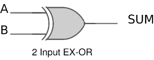
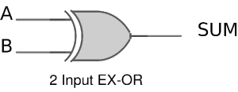

XOR और NAND गेट्स का उपयोग करके हाफ/फुल एडर का निर्माण और इसके संचालन का सत्यापन
परिचय
एडर्स, डिजिटल सर्किट्स हैं जो संख्याओं को जोड़ते हैं। एडर्स अरिथमैटिक लॉजिक युनिट का एक प्रमुख घटक हैं। अधिकांश संख्यात्मक निरूपण जैसे बाइनरी कोडिड डेसिमल (BCD), एक्सेस-3, ग्रे कोड, बाइनरी आदि के लिए एडर्स का निर्माण किया जा सकता है। इनमें से, अधिकांशतः सामान्य एडर्स द्वारा सबसे अधिक बार किया जाने वाला कार्य बाइनरी एडिशन है। इसके अलावा, कुछ डिजिटल अनुप्रयोगों जैसे टेबल इंडेक्स कैलकुलेशन, एड्रेस डिकोडिंग आदि में भी एडर्स का उपयोग किया जाता है।
बाइनरी एडिशन, डेसीमल एडिशन के समान है। कुछ बुनियादी बाइनरी एडिशन नीचे दिखाए गए हैं।
फिगर 1. हाफ एडर का योजनाबद्ध प्रतिनिधित्व
### 1) हाफ एडर
हाफ एडर एक कॉम्बिनेशन सर्किट है, जो दो बाइनरी नंबर्स का सरल जोड़ करता है। यदि हम A और B को दो बिट्स के रूप में मानते हैं, जिनका जोड़ किया जाना है, तो ब्लॉक डायग्राम और A, B के साथ हाफ एडर के लिए एक ट्रुथ टेबल में इनपुट और योग, कैरी को आउटपुट के रूप में निम्नलिखित तालिका में दिखाया जा सकता है।


फिगर 2. हाफ एडर का ब्लॉक आरेख और ट्रुथ टेबल
ऊपर किए गए बाइनरी एडिशन का योग आउटपुट एक EX-OR ऑपरेशन के समान है, जबकि कैरी आउटपुट AND ऑपरेशन के समान है। उसी को कारनू मैप की मदद से सत्यापित किया जा सकता है।
योग आउटपुट के लिए ट्रुथ टेबल और K मैप सिम्पलीफिकेशन एवं लॉजिक डायग्राम नीचे दिखाये गये हैं।

 
फिगर 3. हाफ एडर के योग आउटपुट के लिए ट्रुथ टेबल और K मैप सिम्पलीफिकेशन एवं लॉजिक डायग्राम
कैरी के लिए ट्रुथ टेबल और K मैप सिम्पलीफिकेशन एवं लॉजिक डायग्राम नीचे दिखाये गये हैं।


फिगर 4. हाफ एडर के योग आउटपुट के लिए ट्रुथ टेबल और K मैप सिम्पलीफिकेशन एवं लॉजिक डायग्राम
कैरी = AB

फिगर 5. हाफ एडर लॉजिक डायग्राम
जैसा कि हम जानते हैं कि NAND और NOR को यूनिवर्सल गेट्स कहा जाता है, क्योंकि इन दोनों का उपयोग करके किसी भी लॉजिक सिस्टम को लागू किया जा सकता है, उनका उपयोग करके हाफ एडर सर्किट को भी लागू किया जा सकता है। हम जानते हैं कि हाफ एडर सर्किट में एक Ex – OR गेट और एक AND गेट होता है।
# 1.1) NAND गेट्स का उपयोग करते हुए हाफ एडर
हाफ एडर को डिजाइन करने के लिए पांच NAND गेट्स की आवश्यकता होती है। NAND गेट्स का उपयोग करते हुए हाफ एडर का निर्माण करने के लिए सर्किट नीचे दिखाया गया है।

फिगर 6. NAND गेट्स का उपयोग करते हुए हाफ एडर का निर्माण
### 1.2) NOR गेट्स का उपयोग करते हुए हाफ एडर का निर्माण
हाफ एडर को डिजाइन करने के लिए पांच NOR गेट्स की आवश्यकता होती है। NOR गेट्स का उपयोग करते हुए हाफ एडर का निर्माण करने के लिए सर्किट नीचे दिखाया गया है।

फिगर 7. NOR गेट्स का उपयोग करते हुए हाफ एडर का निर्माण
2) फुल एडर
फुल एडर एक डिजिटल सर्किट है जिसका उपयोग तीन बाइनरी बिट्स के योग की गणना करने के लिए किया जाता है। हाफ एडर की तुलना में फुल एडर जटिल होता है और इसे लागू करना मुश्किल होता है। तीन बिट्स में से दो पहले के समान हैं, जो A, ऑगेंड बिट और B, एडेंड बिट हैं। अतिरिक्त तीसरा बिट पिछले चरण का कैरी बिट है, और आमतौर पर CIN द्वारा इसका प्रतिनिधित्व किया जाता है। यह कैरी के साथ तीन बिट्स के योग की गणना करता है। आउटपुट कैरी को कैरी-आउट कहा जाता है और कैरी आउट द्वारा प्रतिनिधित्व किया जाता है।
इनपुट A, B और CIN के साथ एक फुल एडर का ब्लॉक डायग्राम, और आउटपुट के रूप में S कैरी आउट नीचे दिखाया गया है।

फिगर 8. फुल एडर ब्लॉक डायग्राम और ट्रुथ टेबल

फिगर 9. फुल एडर लॉजिक डायग्राम
ट्रुथ टेबल के आधार पर, बूलियन फंक्शन्स Sum (S) और कैरी-आउट (COUT), K –मैप का उपयोग करके प्राप्त किए जा सकते हैं।


फुल एडर के लिए एक कॉम्बीनेशनल सर्किट को लागू करने के लिए, ऊपर दिए गए समीकरणों से स्पष्ट है कि हमें योग के लिए चार, 3-इनपुट AND गेट्स एवं एक 4-इनपुट OR गेट्स तथा कैरी-आउट के लिए तीन 2-इनपुट OR गेट्स तथा एक 3-इनपुट OR गेट्स की आवश्यकता है।
### 2.1) NAND गेट्स का उपयोग करके फुल एडर
जैसा कि पहले उल्लेख किया गया है, एक NAND गेट यूनिवर्सल गेट्स में से एक है और इसका उपयोग किसी भी लॉजिक डिजाइन को लागू करने के लिए किया जा सकता है। केवल NAND गेट्स का उपयोग करके फुल एडर का सर्किट नीचे दिखाया गया है।

फिगर 12. NAND गेट्स का उपयोग करके फुल एडर
2.2) NOR गेट्स का उपयोग करके फुल एडर
जैसा कि पहले उल्लेख किया गया है, एक NOR गेट यूनिवर्सल गेट्स में से एक है, और इसका उपयोग किसी भी लॉजिक डिजाइन को लागू करने के लिए किया जा सकता है। केवल NOR गेट्स का उपयोग करके फुल एडर का सर्किट नीचे दिखाया गया है।

फिगर 13. NOR गेट्स का उपयोग करके फुल एडर